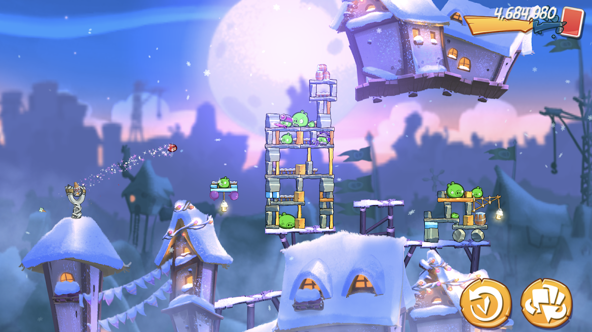
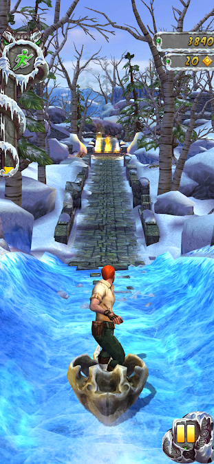
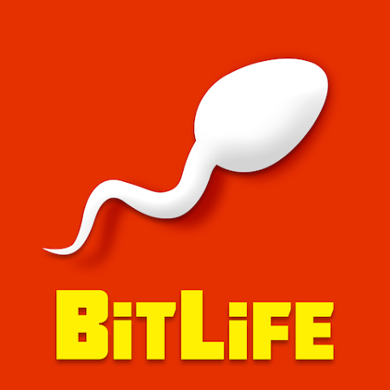

These three games made me fluent in 11 languages
I did not get fluent through flashcards and grammar drills alone. These games kept throwing text, decisions, and consequences at me until understanding became part of play.
The three rules for a useful language-learning game
Language is necessary
I have to read to understand the game and decide what to do.
Choices have consequences
When I misunderstand something, the result makes the meaning memorable.
I can return often
A game on my phone gives me repeated practice without needing a special setup.
What made these games different
“Play games in your target language” sounds like simple advice. The problem is that many games barely require language at all. I can follow the pictures, memorize the buttons, and keep playing without understanding a sentence.
These three games were different. Each one threw me into the deep end without simplifying every sentence or pausing to explain a grammar point. BitLife tied everyday words to choices and consequences. Cell to Singularity placed scientific vocabulary inside a world I was building. Plague Inc. made precise reading matter under pressure.
Language became necessary: I read because I wanted to act, understood because I wanted to win, and repeated the process because the next decision arrived immediately. Over time, I found that the most useful games all pass the same three tests.
Why most games miss the mark

Angry Birds
Physics and visuals carry the game. I can play successfully without reading the language.
What is missing: necessary text
Temple Run
Losing tests my reflexes, not my comprehension. Understanding more language does not change the run.
What is missing: language consequencesDetroit: Become Human
Its subtitles create exceptional immersion, but the hardware and budget make it harder to return to than a phone game.
What is missing: everyday access
BitLife
First: everyday language becomes a decision
BitLife makes the method easiest to see because it is fast, casual, and ruthless. A few lines describe a situation; accepting a friend request, gambling the last dollar, choosing a career, or committing a crime can send the consequences spiraling through the character's life.
The vocabulary is broad and ordinary: school, work, money, health, slang, relationships, and the specific language of criminal law. A character's next decision gives every word an immediate purpose.
When I miss a detail, the outcome exposes what I misunderstood. Another life then gives me a new chance to meet the same language with more context. That cycle turns trial and error into fluency practice.
BitLife turned everyday vocabulary into a chain of choices I wanted to understand.
Cell to Singularity
Then: familiar play opens technical language
Cell to Singularity takes the same reading-through-play method beyond everyday choices and into technical vocabulary.
Behind its simple idle-game loop is a moving encyclopedia of evolution, astronomy, biology, and human history. Milestones repeatedly place words such as symbiosis, abiogenesis, mitochondria, entropy, and singularity inside a progression tree I can see and manipulate.
That visible structure gives difficult terms somewhere to belong. I meet each word inside a chain of causes, discoveries, and upgrades, building an advanced scientific vocabulary through context instead of an isolated translation list. It creates the feeling of becoming a scholar in another language while the vocabulary describes the world growing on my screen.
Cell to Singularity connected technical words to a system I could watch unfold.
Plague Inc.
Finally: precise reading changes the outcome
The third game adds pressure. To win in Plague Inc., I have to understand medical terminology, global data, transmission routes, symptoms, and political responses with precision.
A vague understanding can destroy the strategy I spent an entire run building. Misreading what a symptom does—or overlooking a news event—changes the outcome and makes every term more memorable.
The whole map becomes an urgent reading-comprehension problem, carrying me beyond conversational language into medicine, crisis, geography, and strategy. Text, numbers, and world events must form one picture in my head before I decide what to do next.
Plague Inc. made precise comprehension part of surviving the consequences.
Choose a game that makes language matter
You do not need these exact three games. Look for the same loop: read to act, let misunderstanding change the outcome, and return often enough to try again. Language then leaves the worksheet and becomes part of what happens next.